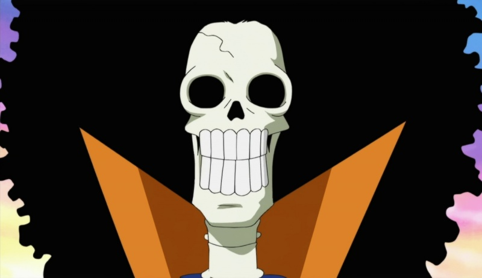

East Blue Saga

Romance Dawn Arc
Luffy leaves Foosha Village with his straw hat and the dream of becoming Pirate King. He rescues Zoro and begins gathering the first members of the Straw Hat crew.

Orange Town Arc
The Straw Hats clash with the explosive pirate Buggy the Clown. Luffy learns to trust his crew as they save the town from chaos and pirate tyranny.

Syrup Village Arc
Usopp joins after the crew foils Captain Kuro’s plot to steal Kaya’s fortune. This arc builds loyalty and introduces the power of clever tactics.

Baratie Arc
Luffy battles the pirate admiral Don Krieg while the crew visits the floating restaurant Baratie. Sanji chooses adventure over duty and becomes the Straw Hat cook.

Arlong Park Arc
Nami’s tragic past is revealed as the crew frees Cocoyashi Village from Arlong’s oppression. The arc highlights friendship, justice, and the strength of Luffy’s resolve.

Loguetown Arc
The crew visits the City of Beginnings where Gol D. Roger was executed. Luffy faces Smoker and the winds of fate push him into the Grand Line.
Arabasta Saga

Reverse Mountain Arc
The crew enters the Grand Line by navigating the dangerous Reverse Mountain currents. They meet the whale Laboon and begin the most dangerous stretch of their journey.
Whiskey Peak Arc
The Straw Hats are welcomed by a town of hidden bounty hunters. Viví joins the crew after they uncover Baroque Works’ conspiracy.
Little Garden Arc
The crew lands on a prehistoric island where giants Dorry and Brogy fight. Luffy faces prehistoric dangers while learning that courage matters more than strength.
Drum Island Arc
In a snowy kingdom ruled by the tyrant Wapol, the Straw Hats rescue Nami with the help of Chopper. Chopper joins the crew as their doctor.
Alabasta Arc
The crew battles Crocodile to stop a civil war in the desert kingdom. This arc reveals Vivi’s loyalty and proves the Straw Hats can challenge the World Government’s secret agents.
Skypiea Saga
Jaya Arc
The crew searches for the legendary sky island and meets the ruthless pirate Bellamy. This arc sets the tone for the next adventure and reveals the existence of the Golden Bell.
Skypiea Arc
The Straw Hats arrive at Skypiea, a floating island ruled by the god-like Enel. They battle priests, uncover ancient history, and ring the God’s Judgment Bell.
Ghibli Arc
A short adventure featuring the giant whale Laboon and the continued bond between the crew and their past promise. It provides emotional closure after the sky adventure.
Water 7 Saga
Long Ring Long Land Arc
The Straw Hats compete in the Davy Back Fight against Foxy’s crew. This arc tests their teamwork and loyalty with high stakes.
Water 7 Arc
On the city of shipwrights, the crew seeks a ship repair but instead uncovers the government assassin CP9. Robin’s past and the future of the crew’s dream are put to the test.
Enies Lobby Arc
The Straw Hats declare war on the World Government to save Robin. They storm Enies Lobby, burn the government flag, and prove their bond is stronger than fear.
Post-Enies Lobby Arc
After the battle, the crew celebrates their victory, gains new bounties, and commissions the Thousand Sunny. Their unity is stronger than ever.
Thriller Bark Saga
Thriller Bark Arc
On a haunted ship, the crew faces zombies, shadows, and the fearsome Gecko Moria. Brook joins the crew after a bizarre and eerie adventure.
Sabaody Archipelago Arc
The crew encounters the Celestial Dragons and the terrifying power of Admiral Kizaru. A tragic separation pushes the Straw Hats to grow stronger apart.
Summit War Saga
Amazon Lily Arc
Luffy is stranded on the island of the Kuja warriors and earns Boa Hancock’s respect. He trains his Haki and prepares to rescue Ace.
Impel Down Arc
Luffy breaks into the underwater prison to save Ace. Alliances shift as old enemies and allies join him in a desperate escape.
Marineford Arc
Whitebeard’s epic war erupts at Marineford as pirates and Marines clash over Ace’s fate. The world changes forever in the aftermath.
Post-War Arc
Luffy mourns Ace and decides the crew must train for two years. The Straw Hats separate to grow stronger for the New World.
Fishman Island Saga
Return to Sabaody Arc
After two years, the Straw Hats reunite at Sabaody with new skills and new dreams. They set sail for Fishman Island and the next stage of the journey.
Fishman Island Arc
On the underwater kingdom, Luffy confronts long-standing prejudice and defeats Hody Jones. The arc redefines the crew’s role as heroes of the sea.
Dressrosa Saga
Punk Hazard Arc
The crew forms an alliance with Trafalgar Law while escaping a deadly gas island. Caesar Clown’s experiments threaten the world.
Dressrosa Arc
The Straw Hats fight Doflamingo in a kingdom full of toys and secrets. The arc reveals the power of friendship and the rising threat of the Yonko.
Whole Cake Island Saga
Zou Arc
The crew meets the Minks on the back of a giant elephant and learns of the Road Poneglyphs. The alliance is formed to challenge the Yonko Kaido.
Whole Cake Island Arc
Luffy and friends launch a rescue mission to save Sanji from a politically arranged marriage. Big Mom’s territory creates the most dangerous challenge yet.
Wano Country Saga
Wano Country Arc
The Straw Hats join samurai rebels to overthrow Kaido and Orochi. Wano tests the crew with powerful enemies, ancient traditions, and world-shaking stakes.
Straw Hat Crew Members
Meet the legendary crew of the King of the Pirates. Each member brings unique skills, dreams, and unwavering loyalty to the Straw Hat Pirates.

Monkey D. Luffy
Captain • Swordsman
The captain and main protagonist. Luffy's dream is to become the Pirate King. With rubber powers and unbreakable spirit, he leads the crew with unwavering determination.
Bounty:
3,000,000,000 Berries

Roronoa Zoro
Swordsman • Vice Captain
The crew's swordsman and the strongest fighter after Luffy. Zoro dreams of becoming the world's greatest swordsman and wields three legendary swords.
Bounty:
1,111,000,000 Berries

Nami
Navigator • Cartographer
The crew's navigator with a sharp mind and skilled combat abilities. Nami dreams of creating a complete map of the world.
Bounty:
366,000,000 Berries

Usopp
Sniper • Storyteller
The crew's sniper and sharpshooter with incredible accuracy. Usopp dreams of becoming a great warrior and is known for his creative abilities.
Bounty:
300,000,000 Berries

Sanji
Cook • Fighter
The crew's chef with powerful leg fighting techniques. Sanji dreams of finding the legendary All Blue where all fish in the world gather.
Bounty:
1,032,000,000 Berries

Tony Tony Chopper
Doctor • Reindeer
The crew's doctor who ate the Human-Human Fruit and can transform. Chopper dreams of becoming a great doctor to cure any disease.
Bounty:
1,000,000,000 Berries

Nico Robin
Archaeologist • Scholar
The crew's archaeologist with the Flower-Flower Fruit powers. Robin dreams of discovering the truth of the Void Century and ancient history.
Bounty:
930,000,000 Berries

Franky
Shipwright • Cyborg
The crew's shipwright who is part cyborg with incredible strength. Franky dreams of building a ship worthy of becoming the Pirate King's vessel.
Bounty:
394,000,000 Berries

Brook
Musician • Swordsman
The crew's musician who is a living skeleton with the Soul-Soul Fruit powers. Brook dreams of seeing his old friend Laboon and playing music around the world.
Bounty:
383,000,000 Berries